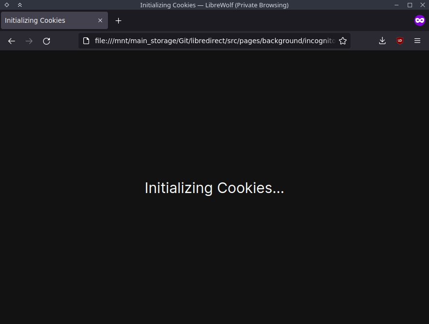

LibRedirect
Suggest a Frontend
Requirements
- Open Source
- Enhances Privacy over main site
- Can be self-hosted. So, It's Decentralized
- Using it is really hard without automated redirections
Good Examples
Bad Examples
- PixivMoe - Only 1 instance, requires login, uses Google Analytics
- Startpage - There's already an extension for it, doesn't require automated redirections. Just set it as your default Search Engine ¯\_(ツ)_/¯
- Old Reddit - There's already an extension for it
- Pinafore - It's a full featured web app for Mastodon, not a frontend
- Soju - It's just a website that gives you samples of Spotify songs, not a frontend. If you want to use it, just visit their website and paste the spotify link you want to get a sample of.
Why forking Privacy Redirect?
Privacy Redirect hasn't been maintained since 6/12/2021. Many instances are hard coded and should be removed as they became offline and many others should be added. Many Pull Requests were just pending and waiting. So we stepped in. This was the main reason. Later though, we started improving more by adding new features and frontends.
Why all those permissions?
let's go on them one by one:
- webRequest,
webRequestBlocking : To blockhttprequests or redirect them. Examples like, To redirect to Invidious before it can reach YouTube's servers. - storage: To save LibRedirect's settings permanently.
- cookies: To apply settings across multiple instances. Note that we also use localStorage. Those options are disabled by default though.
- menus: For adding some buttons to the right click menu:
-
<all_urls> : LibRedirect is dynamic and customizable. The targets e.g youtube.com, twitter.com are written in Regex and are much more complicated than to be hard-coded in the manifest. Ex: search Regex. Further more, we need to access the instances sites too to inject some localStorage variables. - privacy: To know if the browser uses First-party isolation. This is important for creating cookies that the Tor Browser will accept. btw we only read and don't modify any privacy setting.

Where the hell are those instances coming from?
Every frontend project has a list of public instances. Ex: Invidious' official instances list, Nitter's official instances list. We fetch those lists using an automated python script. This script gets triggered every 3 days. We don't intercept it nor modify the lists. They're not our responsibility, they're the projects maintainers'.
Why not using a single reputable instance?
We can make all the redirections based on e.g pussthecat.org. This server is a really reputable and trusted server. Problem is that we'll just kill it with DDoS attacks. Most of these servers are small and some are even hosted from homes. Though if they were somehow able to handle the load, then they won't be able to handle the costs.
At the end, every person should pick and use one or more instances that the user trusts. It's their own choice.
Chrome Web Store?
We can't publish it to the Chrome Web Store as it requires manifest v3 and we use manifest v2. You can still Install it though. We are planning to adapt to Manifest v3 in Firefox as they will support the feature LibRedirect needs. If other Browsers do support Mozilla Policy. You might see LibRedirect in Chrome Web Store.
Why not manifest v3?
Read this: https://github.com/libredirect/libredirect/issues/45#issuecomment-1059010144
Why does a page appear when I open Private Browsing mode ?
If you see the image below, you might get suspicious that why is libredirect initializing Cookies in Private Browsing mode.
The reason is, we apply the settings you have saved in Unify Settings for frontends to work in Private Browsing mode too. For that, we copy the cookies to the Temporary cookies storage of Private Browsing mode. We give a prompt like in the image when we do apply your settings. It almost closes instantly to not interupt you. We don't collect or copy any other critical data other than the intended purposes.
What is Unify Settings?
This feature is to make the use of multiple instances consistent by unifying cookie settings such as theme, language etc...
You use it by visiting one of your selected instances. Go to its settings page. Change its settings. Then press the Unify Button from Popup. This will copy all the settings from the current instance to all the other selected instances.